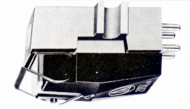

AT-20SLa

■価格 37,000円
■発電方式 VM型
■出力電圧 2.7mV/1kHz
5cm/sec
■針圧 1.0〜2.0g（最適
1.5g）
■再生周波数帯域 10-50,000Hz±3dB
■チャンネルセパレーション 35dB/1kHz
■チャンネルバランス
±0.5dB以下/1kHz
■コンプライアンス 9.5×10-6cm/dyne
■負荷抵抗 100kΩ
■針先 シバタ針
■自重 5.8g
■交換針 ATN-20
18,500円
■発売 1974〜75年頃
■販売終了 1977〜78年
■備考 垂直トラッキング角 20度
価格は1975年頃のもの
AT-15Saの特別仕様品
基本構造はAT-15Saと同様だが、
材料の選別、組立法などに差異があり、
さらに組立後、微調整を時間をおいて
繰り返し、径時変化を極小におさえた
当時の最高級モデル。
スペックについても、AT-15Saと比較し
チャンネルセパレーション 33→35dB/1kHz、
コンプライアンス 9→9.5×10-6cm/dyneと
若干上回っている。